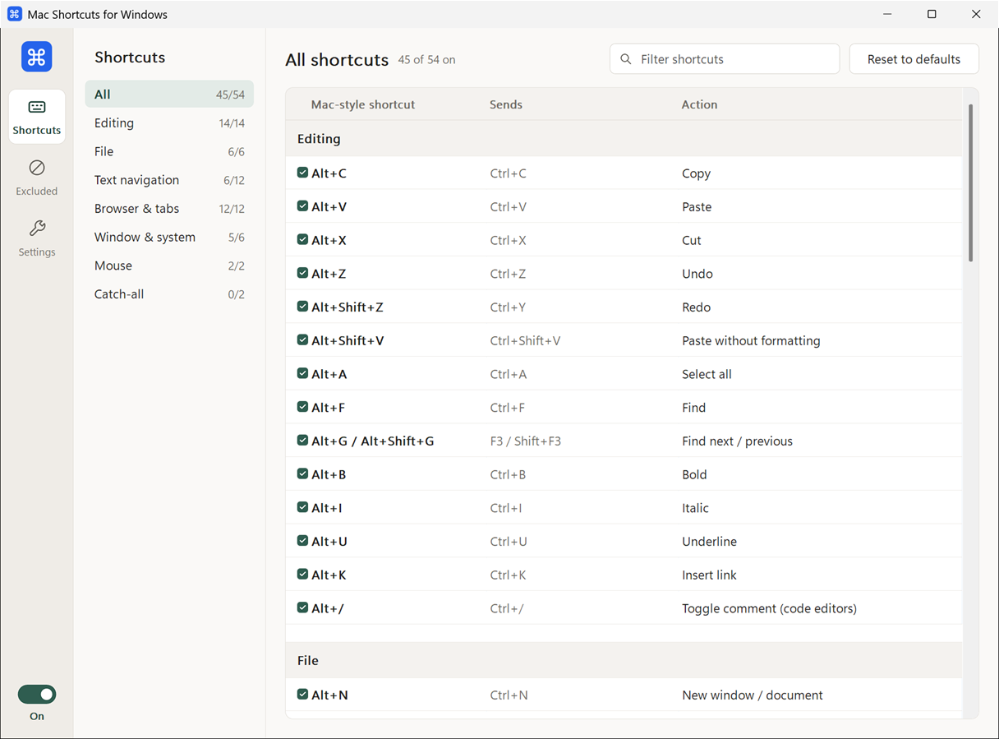

Editing
- AltCCopy
- AltVPaste
- AltZUndo
- Alt⇧ZRedo
- AltFFind
- Alt⇧VPaste without formatting
Free tray app for Windows
Use the shortcuts you're used to on Mac, now on Windows.
Single .exe, under 3 MB · No installer · Works offline
And 51 more. See the full list ↓
Mac shortcuts use the key next to the space bar. On a Windows keyboard, that's Alt. Nothing to relearn, and no need to reach for Ctrl.
Left-click the tray icon to open the window. Every shortcut has its own switch, and one toggle turns them all off.
Every shortcut, grouped by category, with a filter box. Tick or untick each one.

54 shortcuts in all, each one switchable in the app. Some of the favourites:
Turn on the catch-all and every other Alt+letter becomes Ctrl+letter, so app-specific shortcuts work too.
Shortcuts marked opt-in replace something Windows already uses, so they start off.
Every shortcut has its own switch, and there's a master toggle in the tray menu.
Leave Remote Desktop, VMs or games alone. Type a process name, pick a running app or browse for an .exe.
Optionally launches quietly into the tray when you sign in.
Use left Alt, right Alt or both as ⌘. Keep AltGr for €, @ and friends if your layout needs it.
Follows Windows' app mode live, or pick a theme yourself.
A single native executable under 3 MB. No .NET install, no installer, no background services.
Never connects to the internet. No accounts, no telemetry. Settings live in one JSON file.
MIT licensed. Read every line on GitHub, report issues or build it yourself.
Grab MacShortcuts.exe from the latest release and put it anywhere you like.
The settings window opens and the shortcuts are live straight away. Closing the window keeps it running in the tray.
Turn on Start with Windows, untick anything you don't want, and exclude apps that need plain Alt.
Yes. Only the shortcuts you've switched on are remapped, so Alt+Tab, Alt+F4 and every other unmapped combination behave as usual. Tapping Alt on its own still focuses an app's menu bar.
Windows doesn't let normal apps send keys to elevated windows. If you need shortcuts there, use Restart as administrator from the tray menu or the Settings page. Start with Windows always launches without admin rights.
On layouts with AltGr (German, French and others), remapping right Alt would replace those characters. Untick Right Alt acts as ⌘ Cmd in Settings, and left Alt keeps working as ⌘.
Yes. Add it on the Excluded apps page, and nothing is remapped while that app is focused. This is handy for Remote Desktop, virtual machines and games.
SmartScreen can warn about new downloads it hasn't seen often. Click More info, then Run anyway. If you'd rather not, you can build it from source on GitHub.
No. The app never connects to the internet. Your settings are stored locally in %APPDATA%\MacShortcuts\settings.json.
Untick Start with Windows, choose Exit from the tray menu, then delete MacShortcuts.exe. To remove your settings too, delete the %APPDATA%\MacShortcuts folder.